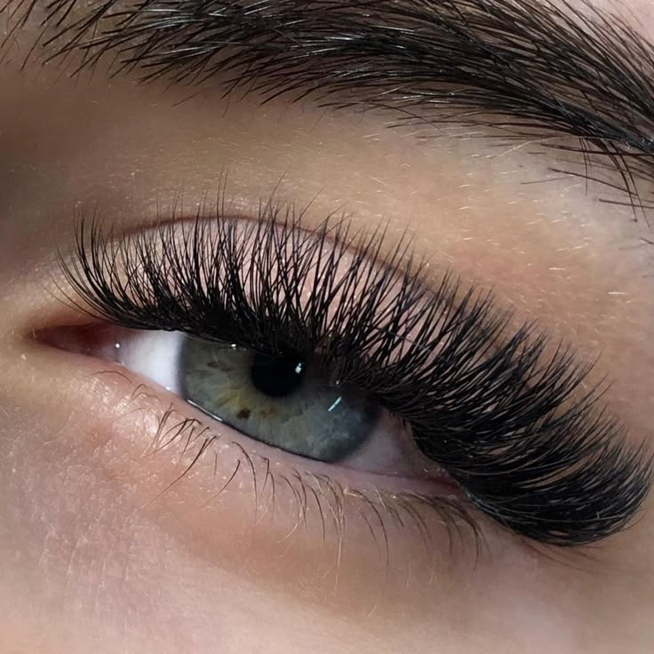
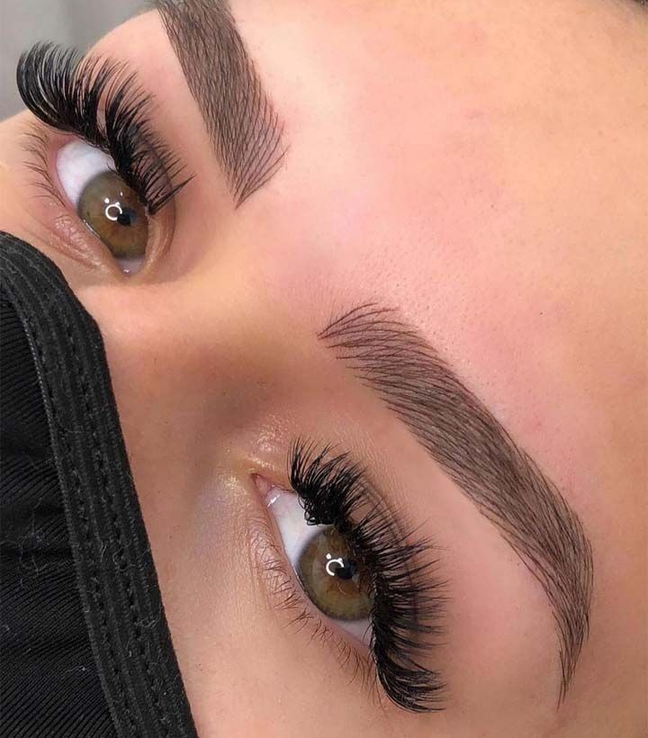

Unhas

- ★ Unha Quadrada
- ★ Unha Stiletto
- ★ Unha Bailarina
Cilios
- ★ Cílios Clássicos
- ★ Cílios Volume Russo
- ★ Cílios Híbridos
- ★ Cílios 3D
Micropigmentação Sombrancelha
- ★ Micropigmentação Fio a Fio
- ★ Micropigmentação Ombre
- ★ Micropigmentação Natural